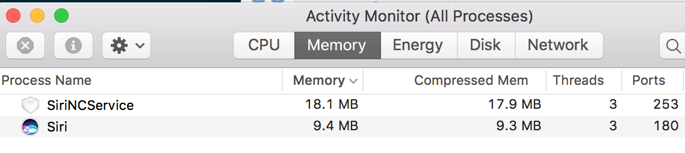

Disabling Siri on OS X High Sierra
This has been adapted from https://apple.stackexchange.com/questions/258816/how-to-completely-disable-siri-on-sierra
Even if you disable Siri in System Preferences, the service will still load. You can see proof of this by opening Activity Monitor.

To disable Siri completely, you will need to adjust a system preference file. This will require you to disable System Integrity Protection (SIP) for a few minutes, after which you can re-enable it.
Disable SIP
- Reboot in Recovery mode by restarting your Mac and holding Command + R. It can take more time to boot as usual, that's OK, just be patient.
- In the top menu go to Utilities and select Terminal.
- Type csrutil disable and press Enter
- Type reboot and press Enter to reboot again.
Editing com.apple.Siri.plist
- Open Terminal.app
- Type sudo nano /System/Library/LaunchAgents/com.apple.Siri.plist to open the file in nano editor with root privileges.
- Find the following lines:
<key>Disabled</key> <false/> - and change them to:
<key>Disabled</key>
<true/> - Press Control+X then y and then Enter to save the file and exit nano.
Re-enable System Integrity Check
- Reboot in Recovery mode by restarting your Mac and holding Command + R
- In top menu go to Utilities > Terminal
- Type csrutil enable and press Enter
- Type reboot and press Enter to reboot again.
Now if you check Activity Monitor, you should see no traces of Siri there.
More Privacy Settings
Further information on securing your Mac and turning off services can be found here: https://github.com/drduh/macOS-Security-and-Privacy-Guide#services